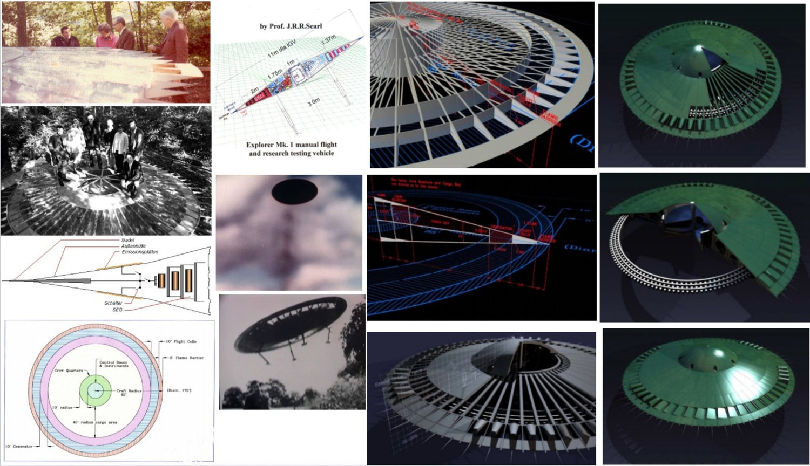
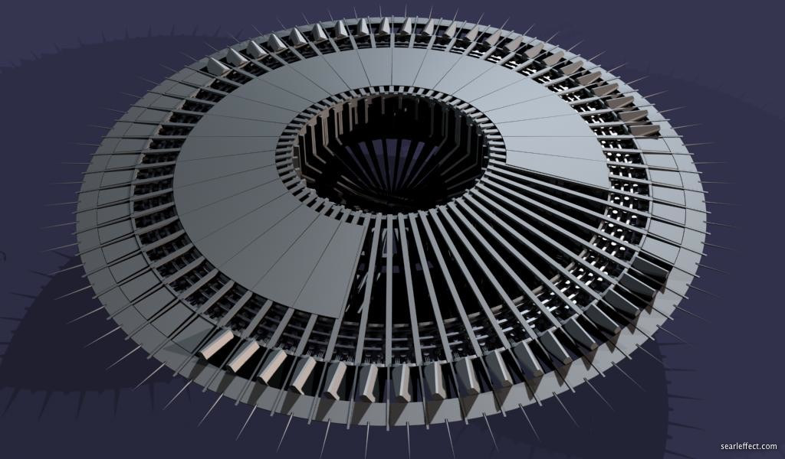
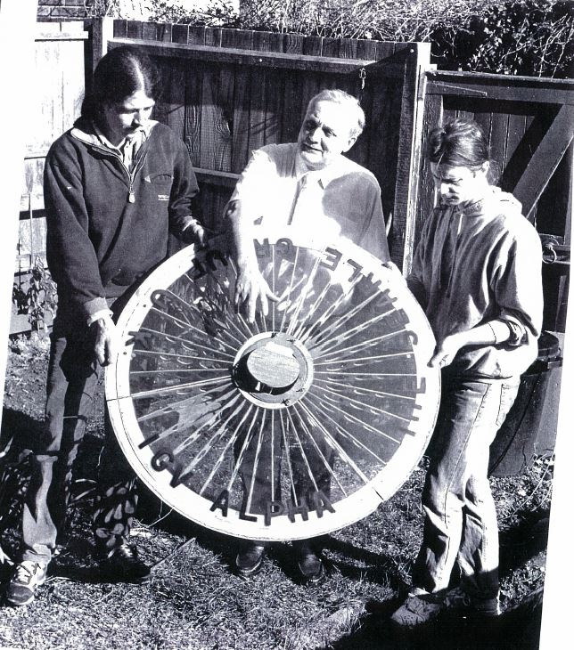
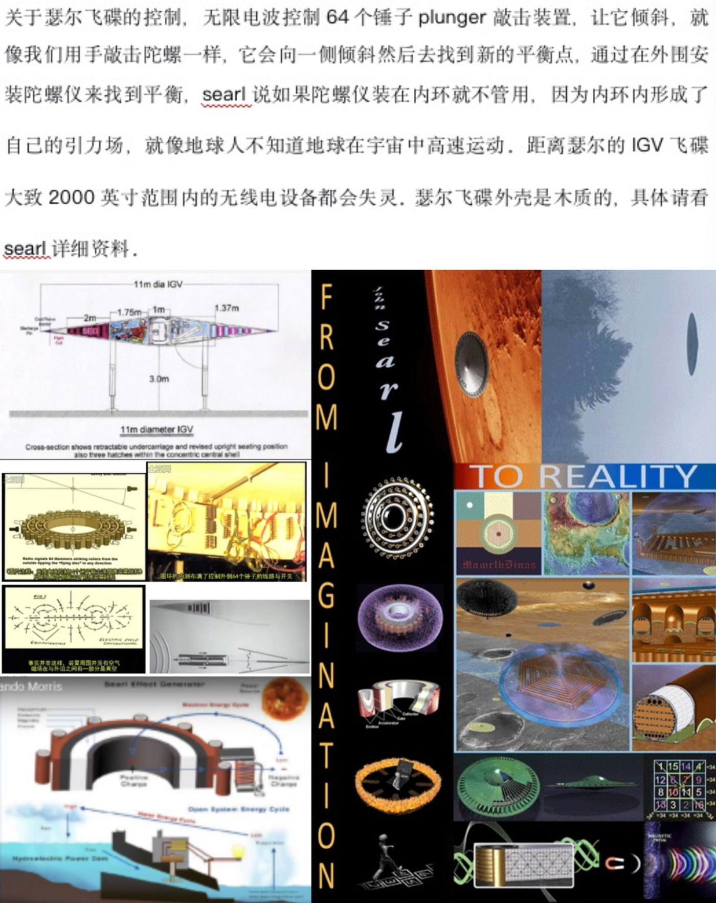
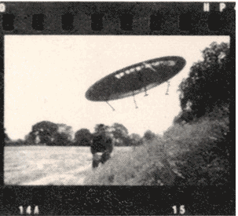
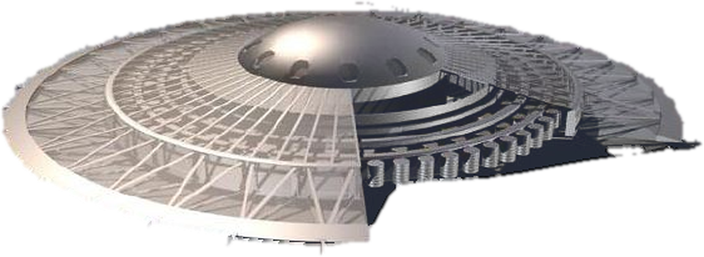

Ⅰ 总览 —— SEG 是「零件」，IGV 是「整机」
Searl 那条线有两种产物：SEG（Searl Effect Generator，地上发电的那台）与 IGV（Inverse Gravity Vehicle， 装上机身能飞的那台）。同一套三环定子 + 滚筒，区别只在于工作点：地面上让它不过载（发电）， 起飞时把它推进过载（温度掉下去 → 反重力）。 A Searl 原话：「when running idle, as we term it, we're not flying, it's just under overload … As soon as we start-up we put a bigger load on and down goes the temperature, the gravity inverses and it lifts.」
一、型号谱系（原著 & 图组可考者）
| 型号 | 直径 | 重量 / 载荷 | 年代 | 要领 |
|---|---|---|---|---|
| 早期「爆竹模型」 | — | — | 1946–1950s | 不可控，竖直上飞即失；邻居叫它「充了电的蝴蝶网」 |
| P 系列（小碟） | ≈11 ft | 数吨（说法不一） | 1960s | 共 41 台原型（第三方记） |
| P-11 A | 10 ft | 10 hundredweight ≈ 508 kg | 1968 | ★ 第一台无线电遥控碟；1968-06-30 首飞，3 分钟穿越 Cornwall，绕地 500 圈；同年 12 月销毁 |
| SWALLOW FM598 Mk.II A | 38 ft | 3 人舱 | 1956 | 「64 个飞行单元与 DEMO 1 略有不同」—— 一次成型后飞离 |
| DEMO 1 A | 21 ft | ≈12 t | 1968–1972 | ★ 透明塑料罩 + 细丝网（可被摄像机看穿，证明无作假）；飞到 12–15 英里，1000 mph 绕圈后平稳落地 |
| 最大碟 A | 40 ft | 另有 2 台 38 ft | — | 原著：「The biggest one was forty feet.」 |
| Explorer Mk.1 B | 11 m | 载人研究机 | 1983+ | 图组剖面图标注尺寸 3.9 m 碟体 / 1.75 m / 1.8 m / 3.0 m 支腿、可收放起落架 |
🔑 一处必须记住的差异：P-11 是无人遥控，DEMO 1 也是无人。 A 原著明说：「There have never been any manned flights because the vehicles were unpressurized and the SEG creates a vacuum. All models were controlled by radio control devices.」 —— 载人从没发生过，原因不是不想，是舱内被抽成真空、生命保障成本太高。
二、三份资料，三个层次
| 层 | 来源 | 可信度 |
|---|---|---|
| A | J.A. Thomas《Antigravity》(Searl 授权传记 + 1990–1993 访谈)；《SEG 演讲》图文稿 | 可逐页引用；本页引文均标页码 |
| B | searlfx.com 图组（61 张 CG + 老照片）；中文《igv飞碟功能宣传》文案 | CG 渲染 不能当物证；中文文案部分细节原著无对应 |
| C | 本页的几何演示 / 航线推演 / 时序图 | 纯推演，不主张物理成立 |
⚠️ 本页最容易误读的一点：中文资料里那句「电波控制 64 个锤子 plunger 敲击装置」—— 经与原著逐句比对，「plunger 撞滚筒」A 确有原文（第 Ⅳ/Ⅴ 视图给出）， 而「64 个」在原著里指的是 64 个飞行单元 flight cells / 64 根支柱 struts， 两者在流传资料里被合并成了同一个东西。详见 Ⅳ。
三、图组：从纸面到「像样子的机器」

相关图片/igv飞碟制造.jpg，3124×1800）。
中左那张剖面示意上明确标着 “16″ Flight Cells”、“5″ Plasma Barrier”、
“Orgon Radius 8″” —— 这是「外围单元」一词在图组里的直证。
B 第三方整理图，非 Searl 手绘。
SearlFX-IGV-17）：同心环 + 辐射支承 + 外缘小齿。
B 渲染图，齿数≠极数。
SearlFX-IGV-67）：Searl 与两人合举一件 SEG 环体。
B 照片来源未署年份，图组内自述与 1983 年后 ALPHA 项目相关。为什么这页要单独立出来：充磁页把「零件」算到了充磁头匝数、折返面位置这一层； 但老师问的这几个问题 ——三环怎么启动、无线电怎么管、64 个外围单元是什么、怎么倾、怎么走 Z 字、怎么去月球—— 全都属于「整机怎么开」，与磁路计算是两套语言。本页把它们从原文里逐条抠出来，并明确标注哪一条是原文、哪一条是流传、哪一条是推演。
Ⅱ 三环启动 —— 从「柴油机点火」到「磁滑差自持」
这是全篇最关键、也最容易被讲错的一节。「三环启动」不是靠外部电把三个环转起来， 而是：先用外部磁场把滚筒「推」进运动 → 只要磁极印纹本身是「错开」的，滚筒就自己加速到自持。 外部启动源后来被证明根本不需要 —— 需要它，是充磁印纹没错开导致的。
原文（授权传记第 56–57 页，STARTER GENERATOR FOR P-11）
J.T.：那这个小柴油机是干什么用的？它想必是台小柴油发电机。
J.S.：是的，一台小柴油发电机，用来感生一个磁场。那是因为那个场、那个力， 本应用来推动滚筒，结果却聚焦到地面上、把地面烧坏了。但当我们反复试验去修正它时， 其实是帮了自己一个大忙！因为我们把磁极错开得足够远，造出了一个很大的「滑差」（slip）， 从而迫使滚筒完全自行旋转。"Because we put the poles sufficiently out of line, to create a big slip that would force the rollers to rotate completely on their own!" —— 另见我做的版本改动：「When we made a new unit we just changed the fields, the magnetizing fields, so that we produced a different arrangement.」
启动四步（原著可考）
- STEP 1外部源接入：小柴油发电机给一个感生磁场（后来发现不必要）
- STEP 2滚筒被推起：磁极印纹错开（out of line）⇒ 产生滑差 slip ⇒ 周向净力 ≠ 0
- STEP 3自持：滚筒转过临界速度后自己产生足够的源继续运行，切断外部源
- STEP 4起飞：把负载加过载⇒ 温度骤降 ⇒ 重力反转 ⇒ 抬升
🔴 一个反直觉点：A「过载越多，温度越低」—— 原著：「if you design something for a certain level of power, if you exceed that level the temperature drops. The higher you exceed that power level the colder it gets. At last it gets so cold it inverses and it lifts.」 这不是损耗发热，而是越吸能越冷。地面待机 = 「just under overload」；起飞 = 加负载跨过阈值。
⚠️ 与「磁路」的接线：这里的「错开」＝ 充磁页 ⑬-bis 的错移量 Δp、 ⑬-quater 的「Δp ⇒ 公转转速」。也就是说 —— 启动能力不是一个额外机构，而是磁纹本身的属性： Δp = 0（极严格对齐）⇒ 滑差为零 ⇒ 必须外部推；Δp ≠ 0 ⇒ 自启。
启动曲线（本页解析真算 · 非示意涂色）
—
模型（唯象，非物理推导）：dω/dt = k·Δp·max(ω, ω₀)/(1+(ω/ω_s)²) + τ_ext − β·ω， 其中 Δp·k 是「印纹错开产生的周向净驱动」，β·ω 是磁滞/涡流阻尼， τ_ext 是柴油机感生磁场的助推（在 2 s 后切断）。 判据：若 Δp=0 ⇒ 去掉 τ_ext 后必然衰减到 0（对应原著「场不真、滚筒自己起不来」）； Δp>0 ⇒ 存在自持转速。C 本页推演，不主张数值精确。
★ 停机：整套系统里最漂亮的一条「意外发现」
A 「（在加拿大电视演示时）它停住了。有史以来第一次。……摄像机一移开，它又转起来了。 我立刻明白了：那台摄像机的振荡器，在横杆上打出了一个「人工磁极」， 而它能让滚筒与两个磁极同时对齐，所以滚筒停了；摄像机一撤，那个人工磁极消失， 磁极重新不平衡，滚筒就又跑起来了。」 "The oscillator of that camera was beating an artificial pole on that bar. And it stopped the roller because it could line up with two poles. But as soon as that camera was gone, that pole was gone, and away went the roller again because the poles are unbalanced."
🔑 这条的意义远超「停机」：它给出了双向可控的物理把手 —— 人为注入一个「配平磁极」，就能让某个滚筒瞬间与两个磁极对齐 ⇒ 该处驱动归零。 第 Ⅴ 视图的「切环断能」与第 Ⅵ 视图的「Z 字改向」，用的是同一个把手。 也正因如此，「减速/停转」在这个系统里不是靠摩擦刹车，而是靠「给某点补一对齐磁极」。
⚠️ 一处与本项目充磁页的呼应：本项目在 ⑬-quater 推出「ω_ss = (μ/β)·Δp、 缓慢停机是可编程的」，并给出斜坡时长下限 ≈ 4.6·I/β。 原著这条「人工磁极」提供的是另一条停机路径：不是把 Δp 慢慢降到 0，而是临时把局部 Δp 归零。 两条路并存，可组合成「粗调 + 精修」。
Ⅲ 无线电操控 —— 载波束、指令信号与「无线电导航点」
老师问的「用无线电控制飞碟悬浮」A 原著确证，而且给出了三个层次的细节： ① 用业余无线电（Ham Radio）做遥控；② 用「载波束 carrier beam」做链路； ③ 用「指令信号 command signal」做拉起/改出。并且 —— 飞碟自己会「按无线电点导航」。
原文三连（A）
① 遥控的确证（授权传记 p62）
「There have never been any manned flights because the vehicles were unpressurized and the SEG creates a vacuum. All models were controlled by radio control devices.」 所有型号一律由无线电控制设备操纵 —— 不是「据说」，是全部。
② 业余无线电（Ham Radio）（《SEG 演讲》图文稿）
「So he built a body around the SEG and utilized its levitation capabilities. Using Ham Radio, he was able to remotely control what he called a Levity Disc.」 给 SEG 装上机身、用它的升力，然后用业余无线电遥控这台他称为 Levity Disc 的东西。
③ 载波束 + 指令信号（授权传记 p66，P-11 首飞现场记录）
「Time is approaching 1500 hrs. The call comes through from Cornwall that all is ready. The carrier beam is on for the run. … the craft might fail to obey the command signal to pull out of the climb, and continue into space and be lost.」 1500 时将至，Cornwall 那边来电说一切就绪、载波束已开通；众人最怕的，是飞碟不服从「拉起改出」的指令信号，一直爬升冲进太空失联。
控制链路（把原文三条串起来）
🔑 「无线电导航点」这条最容易被漏掉。A 原著 p73，Searl 讲他从轨道拍回来的照片时说： 「I can tell you all the radio points we used to keep ourselves on course. So I knew where the vehicle was.」 —— 也就是说，地面用一串无线电节点给飞碟定位、飞碟自己按这些点保持航线。 这是 1960 年代的做法（相当于今天的 VOR/NDB 无线电导航），不是 GPS。
⚠️ 流传资料补充的两条（B，原著未证）：
① 「距瑟尔 IGV 大致 2000 英寸（≈50.8 m）范围内的无线电设备都会失灵」——
A 原著确有旁证：「local radio receivers to go on of their own accord」
（1952 年首次实验时，附近收音机自己开机），但「2000 英寸」这个具体数原著没有。
② 「瑟尔飞碟外壳是木质的」—— A 原著 DEMO 1 用的是
透明塑料罩 + 细丝网（"covered with a clear plastic … we ran a fine wire grid"），
不是木头。此处两说冲突，本页以原著为准。
★ 从「遥控」到「自主」：同一套硬件的两个工作模式
| 模式 | 原著依据 | 链路 | 风险 |
|---|---|---|---|
| 遥控模式 | P-11 全部飞行（1968-08 ~ 1968-12） | 地面载波束 → 机载接收 → 执行 | 链路一断，飞碟「继续爬升冲进太空」—— 原著里这是最怕的事，也真的丢了 6 台 |
| 自主模式（推演） | 「radio points we used to keep ourselves on course」 | 机载按电台节点自算航线，地面只做监控 | 原著没有描述机载计算机；C 本页推演 |
为什么「无人」是必然：A 原著给了两个独立原因 —— ① SEG 运行时把舱内抽成真空（"the SEG creates a vacuum"），要载人就必须上生命保障； ② 舱内是独立引力参考系（见 Ⅴ），人在里面感觉不到加减速， 所以美国空军 1970 年在 Edwards AFB 的评语是「Your craft doesn't appear to have inertia」—— 这条既是卖点也是它被拒绝的理由（他们无法解释无惯性）。
Ⅳ 64 个外围单元 —— 「电磁锤」这个叫法，对了一半
老师原话：「用无线电和 64 个外围电磁锤控制飞碟悬浮」。这条说法来自中文流传资料：
B「关于瑟尔飞碟的控制，无限电波控制 64 个锤子 plunger 敲击装置，让它倾斜，
就像我们用手敲击陀螺一样……」
本页把这句话拆成四个可独立核验的断言，逐条对照原著 —— 结果是三条对、一条是合并。
逐条对照（这是本页最要紧的一张表）
| 断言 | 判定 | 原著原文 | 该怎么写才算准 |
|---|---|---|---|
| ① 数量 = 64 | ✅ 对 | "one of the 64 struts of DEMO 1"（p111） "I myself made all 64 struts without help"（p111） "the space between the SEG and the rim is for the flight cells (64 off them)"（p113） "the 64 flight cells were slightly different to DEMO 1"（p114，SWALLOW） |
64 确实是原著数字，而且同时是 64 根支柱（struts）和 64 个飞行单元（flight cells）。 ⇒ 写「64 个外围单元」最稳；写「64 根支柱」或「64 个飞行单元」也都对。 |
| ② 位置 = 外围 | ✅ 对 | "the space between the SEG and the rim is for the flight cells"（p113） "you have the flight cells at the edge"（p68） |
飞行单元装在 SEG 与碟缘之间的环带里 —— 就是「外围」。位置完全对得上。 |
| ③ 功能 = 让它倾斜 / 控制运动 | ✅ 对 | "Then you have the flight cells at the edge, so you could control the movement of the craft"（p68） "it also causes it to tilt, quick"（p38） |
功能描述准确：边缘单元用来控制碟体运动，动作是倾斜。中文那句「让它倾斜」与原著一致。 |
| ④ 机构 = 锤击装置 （锤子 / plunger） |
⚠️ 半对 | "at the same instant you have a plunger that strikes the roller just passing.
And that causes the gyro effects to take place."（p38） "…it's rubber. But the fact that it just hits it, because it's in motion at right angles to the impact, it doesn't damage it. … it sets up an oscillation wave in the system. But it also causes it to tilt, quick."（p38） |
「plunger 撞击滚筒」确有原文，但它不是 64 个 —— 原著说 64 的是
flight cells / struts。 ⇒ 准确写法：「64 个外围飞行单元（flight cells，装在 SEG 与碟缘之间）负责姿态； 另有一套 plunger（柱塞/顶杆）在瞬间撞击正在通过的滚筒，激起陀螺效应使碟体快速倾斜。」 流传资料的「64 个锤子」＝把「64 个单元」的数量与「plunger 敲击」的机构合并成了一个东西。 |
环形分布（本页示意）
内圈 = 三环定子+滚筒（12 / 22 / 32）；外圈 = 外围单元环（默认 64）。
「敲陀螺」这个比喻，原著自己就用了
B 中文资料说「就像我们用手敲击陀螺一样，它会向一侧倾斜然后去找到新的平衡点」。 这个比喻并非随便打的 —— A 原著 p38 说柱塞撞击「causes the gyro effects to take place」 （激起陀螺效应），p44 进一步写：
「Angular momentum is known to be related to gyroscopic restoring couples. … might this not suggest that rotating matter generates a field along this axis? As yet, it can only be postulated that the field couples the gyro in a fixed orientation in the space fabric.」 角动量与「陀螺回复力偶」有关……那么，旋转的物质是否会在其转轴方向产生一个场？ 目前只能假设：这个场把陀螺锁在空间织物中的某个固定朝向上。
🔑 所以 Searl 的模型里，滚筒的角动量本身就是「空间织物里的一个固定朝向」； 柱塞去撞它，等于强行把这个朝向推偏，碟体就跟着倾。倾斜 = 推偏角动量轴， 而不是靠气动舵面或喷流 —— 这与 Ⅴ 的「切环断能」是两条并行的姿态通道。
⚠️ 流传资料里一条很关键、且原著未提的说法（B）：
「通过外围安装陀螺仪来找平衡，Searl 说如果陀螺仪装在内环就不管用，因为内环内形成了自己的引力场，
就像地球人不知道地球在宇宙中高速运动。」
⇒ 这条逻辑上自洽：如果内环内部确实是一个独立引力参考系（见 Ⅴ 的「舱内恒定 1/2 G」），
那么装在内环里的陀螺仪就测不到外界姿态变化，只能装在外围。但原著没有这句话的原文，本页只标 B。
配图：图组里那张「飞行单元」标注图

相关图片/igv飞碟功能宣传.jpg，1500×1891）。
上半 = 「电波控制 64 个锤子 plunger 敲击装置」那段中文控制说明 + 11 m 直径 IGV 剖面图
（标注 3.9 m 碟体 / 1.75 m / 1.8 m / 3.0 m 支腿）；
下半 = 「From Imagination to Reality」海报，混排图纸、渲染与实物照片。 B
本页引用它只为「这段话的出处」，不背书其技术主张。
相关图片/igv.gif，303×275）：
黑白胶片，右上角有片孔与编号 14A / 15，碟体放下起落架悬停于草地，
前景有人。 B 出处未署年份与机型；不能据此断定是 P-11 还是 DEMO 1。
figs/igv_saucer.png）：
外圈桁架支承盘、中心穹顶舷窗环、右下剖切露出的同心滚筒环。 B 第三方 CG 渲染。Ⅴ 悬浮与姿态 —— 14° 倾角、弓形力场、切环断能、柱塞陀螺
这一节回答老师的两个问题：飞碟的飞行角度是多少、怎么控制悬浮与转向。 A 原著给出的角度是 14 度，并给出三条并行的姿态通道。
A 授权传记 p37–38（姿态控制唯一一段集中描述）
「So when you are flying forward, remember that the craft is flying at a tilt of roughly 14 degrees. Now the ring, that force field around it, the bow ring, protects the structure. But it also does more than that, it's what keeps it there level and constant. And if you cut a chunk out, it means at that point you haven't got the force propelling you.」 前飞时，碟体以大约 14 度的倾角飞行。碟外那圈力场 —— 弓形环（bow ring）——保护结构， 更重要的是让它保持水平、恒定。而如果你把环切掉一块，就意味着在那一块位置上你失去了推进力。 "That's the first thing we do, but at the same instant you have a plunger that strikes the roller just passing. And that causes the gyro effects to take place. … it also causes it to tilt, quick."
三条姿态通道（原著可考）
| 通道 | 原文 | 物理动作 | 响应 |
|---|---|---|---|
| ① 切环断能 A |
"if you cut a chunk out, … at that point you haven't got the force propelling you" "you are just denying power to a certain point" |
在弓形环的某个方位上把推进力归零 ⇒ 该侧升力缺口 ⇒ 碟体向该侧倾 | 准静态、可维持（可长按） |
| ② 柱塞撞滚筒 A |
"a plunger that strikes the roller just passing … causes the gyro effects" | 瞬时脉冲打击滚筒 ⇒ 角动量轴被强行推偏 ⇒ 激起振荡波 | 瞬态、快（"tilt, quick"） |
| ③ 负载单元 A |
"the idea of the load cells is to pass a heavy current thru the elements, top or bottom. And thru the center point, out." | 顶/底元件通大电流、经中心点流出 ⇒ 向大气射出高加速电子 ⇒ 大气被迫弯曲 ⇒ 弓形波 | 持续；且决定弓形波强度 |
🔑 「切环」不是真的锯掉一块。原著措辞是「denying power to a certain point」—— 在环的某个方位上、把那一刻的驱动断掉。与第 Ⅱ 视图「人工磁极让滚筒与两极对齐 ⇒ 驱动归零」 是同一个物理把手的两种用法：一个用于停机，一个用于转向。
⚠️ 注意 ①②的差别：① 是改升力分布（准静态，用来保持某个倾角）， ② 是打击角动量（瞬态，用来快速起倾）。两条通道同时存在， 于是「慢慢压过去」和「猛地别一下」都能做到 —— 这就是 Ⅵ Z 字机动的物理底子。
姿态 3D 示意（可拖动改视角 · 双击复位）
—
★ 舱内是一个「独立的引力世界」——本页最重要的一条物理口径
A p39（惯性与重力）：
「what we found was that all measurements that were showing on the graph, it was a tri-pen recorder, showed that the biggest stress on the craft was when it was idle on the ground. As soon as it was airborne everything was at zero! We thought at first that the equipment was faulty, but when it landed, back came the original signals again.」 三笔记录仪显示：碟体受力最大的一刻是它停在地面时；一旦升空，所有读数全部归零。 起初以为是仪器坏了，落地后信号又全回来了 —— 换另一家公司的仪器，结果一样。 "we put in a very thin bottle of radioactive material. … it would crack easily as soon as you got up to about 2 G's. … when it returned it was still complete, and we reckoned that we must of hit 20 G's."
"that is artificial gravity of about 1/2 G … Within the craft that 1/2 G is constant no matter how high you take it."
| 观测量 | 地面 | 飞行中 | 口径 |
|---|---|---|---|
| 应变 / 应力记录 | 最大 | 0 | 原著实测（三笔记录仪） |
| 放射性脆性瓶 | 完好 | 完好 | 本该在 2 G 碎裂，实际承受了约 20 G 仍完好 |
| 舱内重力 | 1 G | ≈ 1/2 G 恒定 | 与高度无关 |
| 乘员体感 | — | 无加减速感 | 美国空军 1970 评语：「doesn't appear to have inertia」 |
🔑 这三条合起来只指向一个结论：碟体与舱内是两套力学环境。
外面受 20 G 而舱内恒定 1/2 G、且传感器测不到任何惯性 ——
这正是中文资料那句「它就像地球人不知道地球在宇宙中高速运动」的原著依据。
⇒ 它还解释了两件事：① 为什么陀螺仪只能装外围（内环测不到外界姿态，见 Ⅳ）；
② 为什么载人必须上生命保障（舱内被抽真空、且是独立参考系）。
悬浮的副作用（原著自己列的风险）
| 现象 | 原著原文 | 说明 |
|---|---|---|
| 烧地 / 拔地 | "it tended to pull the earth up. Any earth that wasn't heavy and solid, it simply pulled up and carried up with the craft."（p64） "the best hazard … if the craft hovers for too long low near the ground the soil becomes burnt"（p49） "left a scooped-out effect where the craft had stood. There was a burnt ring around"（p67，P-11 首飞现场） |
起飞点留下环形焦痕 + 被拔起的土 —— 这是原著反复提到的「必须解决」的头号问题（场聚焦到地面） |
| 动物神经系统受扰 | "the nervous systems of animals are interfered with by ionizing discharge if they get too near"（p49） | 靠近时电离放电干扰神经系统 |
| 可能引发雷暴 | "This effect coupled with the output of electrical energy could well precipitate thunderstorms"（p49） | 潮湿条件下离子可致凝结 |
| 粉红/蓝色光晕 | "surrounded itself in a pink halo. This indicated ionization of the air at a much reduced pressure:
10 to the minus three mm Hg"（p59） "rise to a pink to blue glow around the craft"（p49） |
★ 这是原著给过定量的一条：光晕 ⇔ 气压降到约 10⁻³ mmHg（≈ 1.3×10⁻¹ Pa）的空气电离 |
| 电器自己开机 | "causing local radio receivers to go on of their own accord … Televisions and radios turn on by themselves"（p59/p29） | 1952 年首次实验即出现；流传资料的「2000 英寸内无线电失灵」是这条的放大版（B 层） |
⚠️ 口径：以上全部为 A 层原文（页码已标），但原文本身即未被独立复现。 本项目不主张这些现象物理成立；收录它们是因为 —— 它们是原著设计约束的一部分： 「烧地」直接催生了 Ⅱ 的「磁极错开 ⇒ 滑差 ⇒ 自启」这一改动（因为要让场不再聚焦地面）。
Ⅵ Z 字型飞行 —— 原文没有「Z 字」，但原文给了造出 Z 字的三件套
本页把 130 页授权传记全文做了关键词检索：zig / zig-zag / Z / weave / dodge
全部 0 命中。「走 Z 字型飞行」是流传说法（B），
原著可考的只有「倾斜 14°」「切环断能」「柱塞改向」三个部件级描述。
⇒ 本节把这三件套组装成折线机动的时序，明确标为 C 本项目推演，
不等于 Searl 说过「它走 Z 字」。
为什么「断能 + 柱塞」天然就会走出折线
把 Ⅴ 的三条通道按时间排一下，Z 字就自己出来了 —— 不需要额外发明新机构：
🔑 关键洞察：这个系统里没有「连续转弯」的概念。 因为「转向」= 切换倾角方向，而倾角是通过断能维持的准静态量（通道①） 或通过柱塞瞬变给出的（通道②）。所以它只能「改一次方向、飞一段直线、再改一次」—— 结果必然是折线。这就是「Z 字飞行」这个说法的唯一合理来源。
折线航迹（俯视 + 高度剖面）
—
示意模型：每个折点 = 一次「切环断能 + 柱塞脉冲」；直线段内 tilt 恒定。 高度剖面画的是「折返时的高度起伏」（C 推演）： 若断能同时削弱升力，折点处会有一次下沉—回补。 ⚠️ 原著对折点处的高度变化没有任何记载，此曲线纯属本项目示意。
把「Z 字」放回本项目的语言里
| Z 字飞行的要素 | IGV 上的机构（原著） | 对应充磁页的语言 |
|---|---|---|
| 直线段（稳定姿态） | bow ring 整流 + tilt 14° 恒定 | 极带印纹严格周期性运行区（Δp 恒定 ⇒ 转速恒定） |
| 折点（改向） | 切环断能（维持）+ 柱塞脉冲（瞬变） | 局部 Δp 归零（人工磁极配平，见 Ⅱ 停机一节）⇒ 该处驱动缺口 |
| 折角大小 | 断能扇区的张角 + 断能时长 | 缺口宽度 / 持续时间 ⇒ 升力不对称量 |
| 「Z」而不是「S」 | 因为只有「一次改向」没有「连续转弯」⇒ 必定是折线 | 折返面（⑬-bis 的 K）在磁纹上也是离散事件，不是连续渐变 |
⚠️ 再强调一次口径：表格右列是类比，不是等价推导。 「折返面 K」描述的是磁纹在轴向的相位折返，「Z 字折点」描述的是航迹在水平面的方向折返 —— 两者共享「离散折返」这个语法，但不是同一个物理量。C
Ⅶ 「去过澳大利亚拍照」—— 是【从轨道拍回来的照片】，不是人去过
老师这条传闻有原文源头，但被传走样了一步。A 原著 p73， Searl 讲的是：飞碟进轨道后拍了很多照片，他把照片上的澳大利亚细节说给一位澳洲人听，对方以为他亲自去过。
A 授权传记 p73（原话）
「We took many photographs. We were taking photographs here, there and everywhere! We brought the crafts back and had the film developed and we had cine films.」
J.T.: Did you have them right in orbit or… J.S.: Yes, from the orbit. I knew more about Australia than any book ever told me! When I wrote to a chap in Australia who thought he knew a lot and started telling him some facts and figures that I knew, he was surprised! He wrote back and said, "I was surprised! I had to go and look for myself! I didn't know." He said, "You're right. How did you know? Have you been here?" I wrote back and said, "No I've never been there." ——「我们拍了很多照片……是的，从轨道上拍的。我对澳大利亚的了解，比任何一本书告诉我的都多！ 我写信给澳洲一个自认很懂的人，说了些我知道的事实和数据，他惊呆了……回信问：你怎么会知道？你来过这儿吗？ 我回信说：没有，我从没去过。」
原文给出的「飞行性能表」
| 指标 | 原文（A） | 换算 / 备注 |
|---|---|---|
| 最低巡航高度 | "We must travel above 30 thousand feet because of the density of the air."（p63） | 9,144 m；理由 = 空气密度 |
| 纽约 → 伦敦 | 20 分钟 | 5,570 km ⇒ 平均 ≈ 16,700 km/h（13.6 M） |
| 伦敦 → 德国 | 5 分钟 | ≈ 650 km ⇒ 平均 ≈ 7,800 km/h |
| 伦敦 → 澳大利亚 或 伦敦 → 日本 | 30 分钟 | 伦敦→日本 ≈ 9,600 km ⇒ ≈ 19,200 km/h ★ 与第三方流传的「时速 >19,000 km/h」完全吻合 伦敦→澳大利亚 ≈ 16,000 km ⇒ ≈ 32,000 km/h（同一句里两国并列，说明是量级说法） |
| P-11 实测 | "launched on June 30, 1968, and crossed Cornwall in three minutes. … orbit the Earth five hundred times"（p67） | Cornwall 南北长约 120 km ⇒ 3 分钟 ≈ 2,400 km/h（低空段）；绕地 500 圈是主要成就 |
| DEMO 1 实测 | "we had it up 12 or 15 miles. Whipped it around at 1000 miles per hour and brought it down and put it down as though it was no problem."（p68） | 高度 19–24 km；速度 1,609 km/h，且平稳回收 |
| 上限 | "It will almost squeeze up to the speed of light. In the atmosphere you have to move slower."（p63） | ⇒ 大气内限速、大气外接近光速。这是 Ⅷ 分段航线模型的直接依据 |
「去过澳洲」为什么会被传成亲自去
因为 Searl 那句「I knew more about Australia than any book ever told me!」太有画面感，
加上「他怎么知道」的追问，流传中就被压成了「他坐飞碟去澳大利亚拍照」。
⇒ 正确的说法：「IGV 进过轨道，从轨道拍了大量照片；Searl 凭这些照片对澳大利亚地形了如指掌，
以至于澳洲本地人以为他亲自去过。」
⚠️ A 原著同时明写：「All pictures have been destroyed.」（p62） 和「We took many photographs … we had cine films.」（p73）—— 照片存在过，但已被销毁（另见 p88：当局把 John 家里的资料烧了 4 天）。 ⇒ 这批轨道照片今天不可得，这也是为什么本页只能给文字引述、给不出原始影像。
A 轨道停留时长：「Most of the crafts were really up there 10 years before we got rid of them.」全部约 40 台中， 只有 21 和 22 两台因尼龙材料出问题只待了 2 年，其余都长期停留在轨。
🔑 本节的方法论价值：这是「传闻 → 溯源 → 分级」的一个标准样例。 老师的说法方向对（确实有澳大利亚、确实有拍照），但主体错了（是飞碟进轨道拍，不是人过去）。 本页的处理：保留传闻的合理内核，标明走样的那一步，并给出原文页码。
Ⅷ 去月球 · 航线规划 —— 原文给了「排斥」和「时间」，本页补出分段航线模型
A 授权传记 p48（月球/行星排斥，原著唯一一段集中描述）
「Collision between the craft and large objects in space is very unlikely except in direct line of flight … The field is such that the objects are diverted past the craft, or it past the object. But if the object qualifies as a planet or moon having its own gravity due to a glowing core, then the craft oriented by the interaction of fields is strongly repelled away unless measures are taken to alter the field of the craft. Small objects such as meteorites are pushed out by the combined electric and dynomagnetic fields.」 ……但如果那个天体够得上「行星或卫星」——即因为有一个发光的核心而拥有自己的引力—— 那么飞船会因场的相互作用而被强烈排斥开，除非采取措施改变飞船自身的场。小块天体（陨石）则被电场合成的力推走。
原著把月球/行星与陨石分成两类：陨石被推开（小尺度电力），
月球/行星则造成强烈排斥（因为它自己有一个「发光的核心」= 自引力源）。
⇒ 去月球的技术难点不是「抵达」，而是「如何不被弹开」 ——
即要把飞船自身的场调弱（"unless measures are taken to alter the field of the craft"）。
这与前几节的「反重力 = 本机场对消外部引力」是同一个机理的反用：
平时用它排斥地球（起飞），接近月球时要把它调小（着陆）。
分段航线模型（C 本项目推演）
🔑 SEG 4 的公式是本页最有价值的一条。把「排斥」写成可算的平衡式：
β·a_IGV = GM_m/r²，其中 β 是本机反重力场的可调强度系数。
代入月球 GM_m = 4.90487×10¹² m³/s²、月面半径 R_m = 1,737.4 km：
⚠️ 口径：上式是本页把原著那句「strongly repelled away」写成公式的结果（C）； 原著没有给出任何公式、也没有给 β 的定义。此处只做量纲自洽性检验， 不主张 IGV 真能按此式工作。
航线与速度剖面（可调）
—
模型：v_vac = (滑块值/100)·c；β·a_IGV = β/100 m/s²。 时间按 t = Σ tᵢ 直算；开启相对论修正时对真空段用固有时间 τ = t·√(1−v²/c²)（C 本页推演，原著从未提及相对论效应）。
★ 三条「去月球」的时间估算（对照原著口径）
| 假设 | 地月距离 | 巡航速度 | 巡航时间 | 依据 |
|---|---|---|---|---|
| 沿用大气内实测速度 | 384,400 km | 19,200 km/h | ≈ 20.0 h | 按 Ⅶ 那条「伦敦→日本 30 分钟」反推 —— 与「像坐公交」不符 |
| 沿用 DEMO 1 实测速度 | 384,400 km | 1,609 km/h | ≈ 239 h（10 天） | DEMO 1 是大气内测试，不可外推 |
| 取真空段 0.30 c （＝Ⅷ 面板默认值） | 384,400 km | 0.30 c ≈ 89,938 km/s | ≈ 4.3 s | ★ 与 Ⅷ 交互面板的「真空转移 4.3 s ／ 船钟 4.1 s」是同一个数；原著只给 「almost squeeze up to the speed of light」的定性说法 + 第三方「a trip to the moon … the equivalent of a bus ride」 |
🔑 这张表的用途：它说明 —— 「30 分钟到澳大利亚」与「去月球像坐公交」两条说法
只有在「大气内限速、真空段高速」这个分层假设下才同时成立。
原著那句「In the atmosphere you have to move slower」正是这个分层的原文授权。
⇒ 本页把这一条写进模型；但它仍是原著的自我陈述，本页不对其物理真实性作担保。
⚠️ 必须并列的另一条：A 原著 p48 还说 「if the craft carries its own space with it the theory of relativity is inapplicable. In fact, the craft does not travel through space but past it.」 —— 也就是说，Searl 自己的模型根本不打算用相对论（他认为飞船带着自己的空间走）。 本页画布里的「相对论修正」开关，只是给读者一个对照，不是 Searl 的模型。
Ⅸ 物理口径与接口 —— 本页与充磁页的边界
本页与 SEG充磁三明治_三种磁场仿真.html 是同一项目的两个语言层：
那一页讲零件怎么造（磁纹、极带、折返面、充磁头），本页讲整机怎么开（启动、遥控、姿态、航线）。
两页之间只有四个接口，其余各说各的。
| 本页概念 | 充磁页对应落点 | 接口是什么 | 能否互换 |
|---|---|---|---|
| 磁滑差 slip （自启） |
⑬-bis 错移量 Δp；⑬-quater「Δp ⇒ 公转转速」 | 同一件事。原著「poles sufficiently out of line ⇒ big slip ⇒ rollers rotate on their own」 就是 Δp ≠ 0 的物理后果 | ✅ 可互换：本页的 Δp 滑块与充磁页同义 |
| 切环断能 / 人工磁极 （停机 & 转向） |
⑬-quater 的 δ₀ 全局相位旋钮；⑫ 端面配对 | 同族但不同量。原著「人工磁极让滚筒与两极性对齐 ⇒ 驱动归零」是局部 Δp 归零； 充磁页的 δ₀ 是全局相位 | ⚠️ 需换算：局部缺口 vs 全局相位，不是同一个旋钮 |
| 弓形环 bow ring | ②-quinquies 大气三圈环流；⑬ 赤道折返面 | 只共享「环流 / 折返」这个几何语法。原著从未把 bow ring 与磁纹折返面挂钩 | ✗ 不可互换：类比，不是等价 |
| 三环质量比 / 2205 极 （IGV 型） |
③ 极带总数须偶数（SEG 4410 / 3990，IGV 2205）；⑨ 三环 12/22/32 | 充磁页已给「末位 0 = 闭合回路（SEG），末位 5 = 开放锥体（IGV）」—— IGV 型在磁路层就是 2205 那一支 | ✅ 可互换：同一套数字口径 |
边界声明（本页不做什么）
✗ 本页不做 FEA：所有画布都是几何示意 / 唯象曲线，不解场。
✗ 本页不新增数值判据：充磁页的 Λ / δmax / Δend 三条判据
一字未动，本页也不引入新的「合格线」。
✗ 本页不主张物理成立：所有 A 层引文都是
「Searl 说过」，不是「物理如此」。
✗ 本页不代表 Searl 授权：本站点与 searlfx.com / Searl Magnetics 无任何关系。
✓ 本页做的是三件事：
① 溯源：把「三环启动 / 无线电 / 64 个锤子 / 澳大利亚 / Z 字 / 去月球」六条说法，
逐条找到原文出处或明确标注「原文无」；
② 分级：A 原著 / B 流传 / C 推演，
三色可视，不混着写；
③ 可算：把原著里能写成式子的（启动滑差、排斥平衡、航线时间、断能缺口几何）写成式子并给滑块。
🔑 一句话总结两页的关系：充磁页回答「这块磁体上的磁纹为什么能推着滚筒跑」； 本页回答「这台机器怎么开起来、怎么遥控、怎么倾、怎么走折线、怎么去月球」。 前者是制造，后者是运用；前者是本项目的技术主张，后者主要是文献整理 + 几何推演。
Ⅹ 原文索引 —— 本页所有引文的出处
全部 A 层引文出自同一本书：
John A. Thomas Jr.《Antigravity: The Dream Made Reality》（Searl 授权传记，含 1990–1993 访谈），
本地文件 瑟尔故事英文Searl-SEG.pdf（130 页，本页引用的页码为 PDF 物理页码，
与书内印页码相差 8 —— 例如 PDF p66 = 书内 Page 58）。
★ Ⅺ 的引文来自另一批文件（四卷 SEG-Concept-Review.docx，带 § 号），见 Ⅺ G 卡索引。
| PDF 页 | 主题 | 关键英文 | 本页用在哪 |
|---|---|---|---|
| p36 | 电子作用 | "It's a PRIME MOVER of electrons … It is that print that makes the rollers run." | Ⅰ 总览（磁纹驱动） |
| p37 | 飞行碟 / 过载降温 | "running idle … just under overload" / "the higher you exceed that power level the colder it gets" "the craft is flying at a tilt of roughly 14 degrees" |
Ⅱ 启动 · Ⅴ 姿态 |
| p38 | 姿态三通道 | "you are just denying power to a certain point" / "a plunger that strikes the roller just passing" "it also causes it to tilt, quick" |
Ⅳ · Ⅴ · Ⅵ |
| p39 | 惯性与人工重力 | "As soon as it was airborne everything was at zero!" / "20 G's" / "1/2 G" | Ⅴ 舱内独立参考系 |
| p44 | 陀螺回复力偶 | "gyroscopic restoring couples" / "rotating matter generates a field along this axis" | Ⅳ 「敲陀螺」比喻 |
| p47–49 | 真空层 / 飞行危害 | "the soil becomes burnt" / "nervous systems of animals are interfered with" / "could well precipitate thunderstorms" / "10 to the minus three mm Hg" | Ⅴ 副作用表 |
| p48 | 天体排斥 | "strongly repelled away unless measures are taken to alter the field of the craft" "the craft does not travel through space but past it" |
Ⅷ 航线模型落点 4 |
| p59 | 1952 首次实验 | "pink halo" / "10 to the minus three mm Hg" / "local radio receivers to go on of their own accord" | Ⅲ · Ⅴ |
| p62 | 控制方式 | "All models were controlled by radio control devices" / "All pictures have been destroyed." | Ⅲ · Ⅶ |
| p63 | 性能 | "above 30 thousand feet" / "New York to London as 20 minutes, 5 minutes from London to Germany, 30 minutes to Australia or Japan" / "almost squeeze up to the speed of light" | Ⅶ · Ⅷ |
| p64–65 | 启动器 | "you didn't need to do this. It was how we had magnetized them that was causing the need of a starting source" "we put the poles sufficiently out of line, to create a big slip" |
Ⅱ 核心 |
| p66–67 | P-11 首飞 | "The carrier beam is on for the run" / "command signal to pull out of the climb" "crossed Cornwall in three minutes" / "orbit the Earth five hundred times" |
Ⅲ · Ⅶ |
| p68 | DEMO 1 | "flight cells at the edge, so you could control the movement of the craft" "12 or 15 miles … 1000 miles per hour" |
Ⅳ · Ⅶ |
| p69 | 停机机理 | "beating an artificial pole … it could line up with two poles" | Ⅱ 停机 · Ⅴ 通道① |
| p70 | 美国空军评估 | "Your craft doesn't appear to have inertia. That is contrary to all our knowledge."（1970, Edwards AFB） | Ⅲ · Ⅴ |
| p71–72 | 尺寸 / 无人 | "The biggest one was forty feet" / "There were 6 crafts lost before the radio controlled P-11" "Most of the crafts were really up there 10 years" |
Ⅰ · Ⅶ |
| p73 | 轨道摄影 / 澳大利亚 | "Yes, from the orbit. I knew more about Australia than any book ever told me!" "the radio points we used to keep ourselves on course" |
Ⅲ · Ⅶ |
| p111–114 | DEMO 1 照片说明 | "one of the 64 struts of DEMO 1" / "all 64 struts without help" / "the flight cells (64 off them)" / "the 64 flight cells were slightly different" | Ⅳ 核心 |
| 其他底本 | |||
| — | 《SEG 演讲》图文稿 | "Using Ham Radio, he was able to remotely control what he called a Levity Disc." | Ⅲ 遥控确证 |
| — | 中文流传资料 | 「无限电波控制 64 个锤子 plunger 敲击装置，让它倾斜……2000 英寸范围内无线电失灵……外壳是木质的」 | Ⅳ 待订正的说法 · Ⅲ 待证 |
| — | 本项目充磁页 | SEG充磁三明治_三种磁场仿真.html（v3.55）—— ⑬-bis / ⑬-quater / ⑫ / ③ / ⑨ |
Ⅸ 接口表 |
⚠️ 检索方法（可复现）：对 瑟尔故事英文Searl-SEG.pdf 用 PyMuPDF 抽全文（130 页 / 226,249 字符），
对 zig, Z, weave, Australia, 64, plunger, hammer, radio, moon, tilt, carrier beam,
flight cell, strut, start up 逐词全库检索并取上下文。
其中 zig / Z / weave 0 命中（⇒ Ⅵ 的「原文无 Z 字」结论）；
hammer 仅 2 命中且均为口语「hammered it（苦练）」（⇒ 「锤子」是中文译法，非原著用词）。
Ⅺ 「抽打陀螺」—— 无线电 → 单元 → 抽打 → 陀螺 → Z 字：端到端一条链
本节回答一个问题：具体怎么用无线电控制「电磁锤」抽打悬浮飞碟这个空中陀螺，让它走出 Z 字形游走？
Ⅲ（无线电）· Ⅳ（64 单元）· Ⅴ（姿态）· Ⅵ（Z 字）四节各讲了一个环节，
但把它们缝成一条端到端时序、并回答「打哪一个、往哪折」的，就是本节。
★ 本节还补入 四卷 SEG-Concept-Review（.docx） 里的原文 ——
A Ⅹ 的原文索引只覆盖 130 页授权传记，未含这四卷，
所以本节带 § 号的引文是另一批新素材。
中文流传资料（B）把「64 个单元」「无线电地面控制」「plunger 敲击」 粘成了一个名词。对照原文，这三件事分属三处、各有出处 —— 本节把它们拆开并列，不做合并。
A · 控制机构 —— 原文的五条，拆开看
| # | 出处 | 原文关键句 | 机构 | 作用 |
|---|---|---|---|---|
| ① | 授权传记 p38（1990s 访谈）A | "a plunger that strikes the roller just passing. And that causes the gyro effects to take place. … it also causes it to tilt, quick." | 柱塞 plunger （数量原文未给） |
瞬时敲击正在通过的滚筒 ⇒ 激起陀螺效应 ⇒ 快速起倾。 ★ 这才是「抽打陀螺」的字面来源 |
| ② | 授权传记 p68A | "you have the flight cells at the edge, so you could control the movement of the craft" | 边缘飞行单元 | 持续控制碟体运动（姿态 / 配平） |
| ③ | ★ 四卷 f4 §50–51 （Doc-SISRC-DISC-E-MW-1，2005-05-09 Aboyne）A§ |
"FLIGHT CELLS. This section forms the flight angle medium. … Under power it acts at both an electrical and magnetic switch. It cuts the electric power from underneath grid at the same time revise the magnetic field of that segment area." "… the 64 hydraulic rams which control the 900 degrees movement from the horizontal to the vertical." |
flight cell ＋ 64 根液压顶杆 （原文 "hydraulic rams"） |
改「飞行角」：把该扇区从水平转到垂直（0°→90°）。 同时该扇区切电 + 改磁场 ⇒ 产生向下 drag |
| ④ | ★ 四卷 f2（§676 配表）A§ | "Build gear network inside plus radio receiver to operate flight cell from ground control." | 机载无线电接收机 | ★ 「从地面用无线电操纵 flight cell」的原文 —— Ⅲ 的链路在这句上落到具体执行器 |
| ⑤ | ★ 四卷 f4 §50（无动力条款）A§ | "In a situation of no power due to failure acts as a rudder to turn the INVERSE-G-VEHICLE and control position of dropping, thus allowing the … VEHICLE to be manoeuvred manually into an open clearing." | 同上（flight cell） | ★ 断能时单元本身当舵 —— 动力全失也能滑向空地。 这条把「姿态」和「安全冗余」绑在一起 |
🔑 三分结论（Ⅳ 的判定由「对了一半」升级为「可精确三分」）：
中文那句里的 「64」 属于 flight cells / hydraulic rams（③，原文明确 64 hydraulic rams）；
「无线电控制」 属于 机载接收机（④）；
「锤 / plunger 敲击」 属于 p38 的柱塞（①，原著从未说它是 64 个）。
⚠️ 另一个必须说清的差别：③ 的顶杆是「液压」（hydraulic rams），
① 的柱塞是「机械冲击」（strikes）——
两者不是同一种机构，原文也分处两卷、相隔十余年，本页并列不合并。C 本项目整理
B · 端到端闭环 —— 从地面电台到 Z 字航迹（八拍）
把 Ⅲ · Ⅳ · Ⅴ · Ⅵ 四节的部件按时间顺序排下来，「抽打陀螺 ⇒ 走 Z 字」就是一条可逐拍对照原文的链：
🔑 关键洞察一 —— 「抽打」到底打的是什么
打的不是碟体，而是滚筒（①），或滚筒所在扇区的升力条件（③④）。
碟体之所以会倾，是因为它的角动量轴被推偏了 ——
A p44 原文给的是同一套语言：
"Angular momentum is known to be related to gyroscopic restoring couples … it can only be postulated
that the field couples the gyro in a fixed orientation in the space fabric."
⇒ 所以「空中陀螺」这个比喻是原著自己给的，不是中文资料的发挥。
🔑 关键洞察二 —— Z 字 = 方位角序列
「转向」在这台机器上 = 换一个方位角去打。
没有「舵面偏转」那种连续量，只有离散的 φ_addr：
打 0° ⇒ 往一侧折 · 打 180° ⇒ 往另一侧折 · 再打 0° ⇒ 再折。
⇒ 航迹必然是折线，不可能是圆弧。
⚠️ 但「打 φ_addr 就折向 φ_addr」是本页的几何读法，不是原文表述；
原文只说了「改变该扇区磁场 / 产生向下 drag」。C 本项目推演
C · 「打哪一个 → 往哪折」—— 单元环上点一下
—
示意模型：环上每个小方块 = 一个 flight cell（③④）。
点「打一记」= 该方位单元的顶杆动作、该扇区出现缺口（⑤）⇒ 航迹向该方位折一次。
折角与折段长只为看清形状，数值可任意拖动且不具物理含义。
⚠️ 原著对「一次动作 ⇒ 折多少度」没有任何数据，本图不做数值主张。C
这张图在说什么
俯视：中间圆盘 = 碟体，外圈 = 64 个 flight cell（③ 64 hydraulic rams），
内圈虚线 = 三环定子滚筒（内侧 12 / 中 22 / 外 32 —— 见充磁页）。
打一记会发生什么：被选中的那一格变红、顶杆画出、该处出现一条向外的 drag 箭头（④原文）；
同时碟体向该侧压、倾角徽标跳到 14°（⑤）；俯视航迹便多出一个折角（⑧）。
连打两记、方位相反 ⇒ 就是「之」字；连打四记 ⇒ 就是「Z 字 / 锯齿」。
🔑 这张图不画轨迹，画的是「按键 → 动作」的因果： 彩色的只有「被选中的那一格」和「它引出的 drag」。 换句话说 —— Z 字不是被「开」出来的，是被「打」出来的。
D · 这条链上，哪些量能算、哪些不能
| 量 | 关系 | 说明 |
|---|---|---|
| 单元角距 | 360° ÷ N | N = 64 ⇒ 5.625°。这是「能打到的最细方位」—— 比它更细的折角，这台机器打不出来 |
| 滚筒线速度 | v = ω·R | 用充磁页的几何与转速即可算。它决定下一行的窗口 |
| ★ 冲击窗口 | Δt ≈ 节距 ÷ v | ① p38 原文是「strikes the roller just passing」—— 打的不是一个固定点，是一个时间窗：滚筒转得快，窗口就窄。 这是「抽打」这个词唯一的可算含义 |
| 顶杆行程时间 | — | §51 只给「从水平到垂直」的角度，没给速度 / 时间 ⇒ 标 C，本页不编 |
| 冲量 I ⇒ 倾角 θ | — | 原文无任何数据。任何「打一下倾几度」的说法都是本项目之外的东西 ⇒ 不写 |
| 折角 ψ 与 φ_addr | — | 原文只说「改变该扇区磁场 / 产生向下 drag」，没有把方位角与航向改变量挂钩 ⇒ 标 C |
| 节距 / 相的传递 | pitch ÷ mass = velocity | ★ §726 原文（Fernando Morris 公式群）： mass × velocity = phased frequency (pitch) × energy ⇒ pitch ÷ mass = velocity； 紧接一句 "the rollers have to fly per phased freq with its inertia under em control" ⇒ ★ 「滚筒受电磁（em）控制」的原文依据。 ⚠️ 但该式是文字转置，原文未给量纲与单位，本页仅照录，不做数值代入 |
⚠️ 口径：本节不新增任何数值判据。表里标 可算 的三条， 所需参数都来自充磁页既有几何；标 无数据 的四条，原著没有，本页也不补。
E · ★「Z 字形游走」的原文现象原型 —— 四卷里的第一次出现
f3 §786（A§）—— Searl 讲一块充磁过的内板（the inner plate of an S.E.G.）交给学生拿着时，中央的金属垫片怎么跑：
"a metal spacer place on the centre of it run around it in an unusual manner presenting a wriggling pattern being a slight turn to right then back repeating this to the left continuously switching direction as it wobbled around the plate. Though this spacer was only 1/16th inch thick it remains upright all around the plate and it was not clawing, it was oscillating in the vertical plane but never fell over." 「放在它（板）中央的一枚金属垫片，绕着它跑的样子很不寻常 —— 呈现出一种蜿蜒（wriggling）的轨迹：先微微向右转，再转回来，向左重复，方向连续切换， 一边在板上摆动绕行。这垫片只有 1/16 英寸厚，却始终立着，没有刮擦， 它在竖直平面里摆动，但从不倒下。」
① 这段描述的形状 ——「右转—回—左转—回，方向连续切换」—— 与「Z 字 / 之字」形态同构，
是目前能查到的唯一一条原文级记录。
② ⚠️ 但它不是飞行航迹：那是一枚 1/16 in 垫片在一块充磁板上的绕行，
既不是 IGV、也不在空中。⇒ 本节把它标为 B 现象原型，
绝不等同于「Searl 说飞碟走 Z 字」。
③ 值得记下的是同一段还给了一条稳定性观察：方向连续切换、竖直面摆动，却始终不倒。
同批新素材里另外三条（都与「走偏 / 控制」有关）
| § 号 | 原文 | 读法 |
|---|---|---|
| f3 §803 | "if the segments are aligning correctly they will run around a plate without shorting off sideways" | ★ 「横向不跑偏」被原文当成「对齐正确」的判据 —— 反过来，横向失谐 = 对齐出错。这条可作 Ⅵ「折点」的故障侧对照： 折点是主动打出来的，跑偏是被动发生的 |
| f3 §726 | "the rollers have to fly per phased freq with its inertia under em control" | 滚筒的运动受 em（电磁）支配 —— 这是把「电磁锤」这个中文叫法接回原文的那根线： 控制滚筒的手段确实是电磁的，只是原文没说它是「锤」 |
| f2 §676 表 | "Build gear network inside plus radio receiver to operate flight cell from ground control" | ★ 无线电控制链落到具体执行器（flight cell）的原文。 ⚠️ 语境是「改装一台黄色飞行单元做遥控模型」，非原生设计 ⇒ 引用需带语境 |
F · 原文另外给的两条定律，和三个「接回本项目」的点
两条倾角定律（§45–48，仅适用「固定水平面法」）
| 定律 | 原文 |
|---|---|
| §46 第一定律 | "The greater the deflection angle from the horizontal line the more space is available to use. The cost will rise in construction, but the dangers increase with angle increase. Until the angle reaches the point where the weight load inside the generator equals or becomes greater than the generator rim loading." |
| §47 第二定律 | "The smaller the angle THE LESSER the construction cost, and greater are the safety factors. But lesser is the pay load factor. Until the angle becomes too small; that the pay load fails to meet the cost of construction." |
★ 这两条给了壳体外倾角的上下限判据（成本 ↔ 载荷 ↔ 危险）。 ⚠️ 它说的是壳体几何的固定倾角（设计态）， 不是 Ⅴ / Ⅵ 里那个飞行中的姿态角 14° —— 两个「角」不是一回事，引用勿混。C
三个接回本项目的点
| §53 | 最外环 32 套滚筒比中环 22 套快（原文 "travels at 2h times faster"，⚠️ 原文如此）；
目的是 "create a mass of material in stead motion all in one direction"
⇒ 制造单向运动的物质质量。 ★ 与充磁页「内 12 / 中 22 / 外 32」数量口径一致 |
| §54 | 磁体两种型式 —— bottle（瓶型） 与 square（方型），
后者带 a special twist in the design，
twist 的位置必须与「磁体数量、转速」匹配。 ★ 这条连回充磁页 ⑰ 的幻方 / 斜极：twist 的位置不是自由的 |
| §49 | FLAME BARRIER（火焰屏障）：外缘做成锐角，保护 flight cells 免受再入 / 高速大气的边缘加热。 ⇒ 单元的外层还有一层热防护，用顶杆动它时要连这层一起想 |
G · 本节引文的 § 号索引（四卷 SEG-Concept-Review）
| 分卷 | § 号 | 主题 | 本节用在哪 |
|---|---|---|---|
第二卷 _111-220.docx | |||
| f2 | §676 配表 | 改装黄色 flight cell | A ④ · E —— radio receiver … from ground control |
第三卷 _221-330.docx | |||
| f3 | §726 | Fernando Morris 公式群 | D · E —— pitch ÷ mass = velocity、under em control |
| f3 | §786 | 充磁内板上的金属垫片 | E —— ★ wriggling pattern（Z 字游走的现象原型） |
| f3 | §803 | 分段对齐判据 | E —— without shorting off sideways |
第四卷 _331-437.docx —— Doc-SISRC-DISC-E-MW-1（2005-05-09，Aboyne） | |||
| f4 | §45–48 | 倾角两条定律 | F —— FIRST LAW / SECOND LAW（壳体固定倾角，非姿态角 14°） |
| f4 | §49 | FLAME BARRIER | F —— 外缘热防护 |
| f4 | §50 | FLIGHT CELLS | A ③⑤ · B ④ —— flight angle medium / 电-磁开关 / 向下 drag / 断能当舵 |
| f4 | §51 | FLIGHT CELL CONTROL DIVISION | A ③ · B ③ —— ★ 64 hydraulic rams |
| f4 | §52–53 | 隔离墙 / 三环发电机 | F —— 32 / 22 滚筒与单向质量 |
| f4 | §54 | 磁体型式 | F —— bottle / square + special twist |
| f4 | §56–57 | THE CABIN / CENTRAL COLUMN | B ① —— all the control data … communications with Earth |
⚠️ 本节总口径：Ⅺ 是文献考据 + 几何演示， 不是 FEA、不是实测、不是工程手册。 「Z 字游走」在原著里没有记载（Ⅵ 已检索证实）， 本节做的是把原文已给的部件排成一条时序，并明确标注每一拍的证据级别 —— A 原文 / B 流传或现象原型 / C 本项目推演。 不新增数值判据；不主张这些现象物理成立。